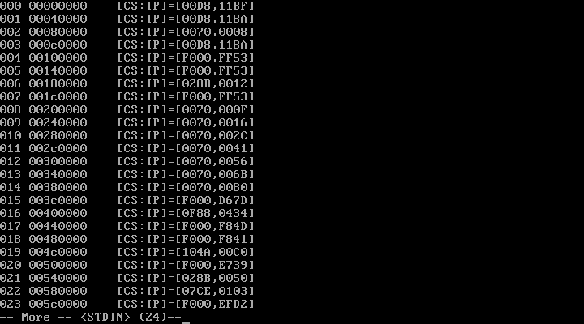

tab shack
exploring an os: freedos's interrupt vector table
In this series, I'll be exploring different operating systems and breaking down important data structures that underpin their kernels. For the sake of simplicity, I'll start with the modern day equivalent of DOS (i.e. freedos) and in later post proceed to more advanced systems and kernels. With that said lets get started.
assumptions
This is a fairly technical post so before venturing forward here a few topics you should be familiar with.
- I'll assume you know your way around a virtual machine. I'll be using freedos on qemu/kvm with fedora 21 serving as the host. I won't explain the process of installing anything other than the development tools we'll need to explore the system.
- I'll assume you have some familiarity with c and assembly, although I will try to explain most of the code.
- You have netcat installed on your host machine.
- You're comfortable navigating the command line.
installing dev tools in freedos
Assuming you've installed freedos on qemu/kvm and enabled networking (on both the vm and freedos), we'll proceed to install development tools. Download openwatcom.exe onto your host machine and transfer the file onto the freedos vm. In order to transfer the file, I initiate a listening instance of netcat on freedos:
nc -bin -listen 1234 > file_name.exe
I then proceed to send the file by initiating an instance of netcat on the host machine:
nc -w 3 $ipAddr $port < file_name.exe
Finally once the file has been transferred, I execute openwatcom.exe and follow the installation instructions. Once the installation process is complete we'll be able to build programs in c and assembly. This will be necessary for exploring freedos's interrupt vector table.
quick aside: real mode
Before we study the interrupt vector table we need to understand a bit about the execution environment for processes in freedos. Processes run in a segmented memory model known as real mode. Here the address for a byte, also known as it's logical address, in memory is calculated by adding 16-bit segment selector to a 16-bit effective address. By placing an implied zero at the end of the segment selector we are able to generate a 20-bit logical address for our bytes (important for freedos because it has a 20-bit address space). You should also note that unlike modern operating systems there are no memory protections provided by real mode. This allows user processes to read and write kernel data structures. We'll take advantage of this in order to study the interrupt vector table.
interrupt vector table
The interrupt vector table (IVT) serves as the entryway to the kernel and is a fundamental system-level data structure in freedos. The IVT essentially maps interrupts to interrupt service routines (ISR). To any Javascript aficionados the IVT is analogous to mapping events (interrupts) to callback functions (ISRs). In real mode, the IVT is stored at the bottom of memory (0x00000). The IVT maps interrupts to ISRs by storing the logical address of each ISR sequentially. So the logical address of the first interrupt's ISR is stored from 0x00000 to 0x00003. The following four bytes (0x00004 to 0x00007) store the address of the ISR for the second interrupt and so on.
dumping the IVT
In order to dump the contents of the IVT write the following program on freedos.
#include <stdio.h>
#define WORD unsigned short
#define IVT_001_ADDR 0
#define IVT_255_ADDR 1020
#define IVT_VECTOR_SZ 4
void main()
{
WORD csAddr;
WORD ipAddr;
short address;
WORD vector;
vector = 0x0;
for
(
address=IVT_001_ADDR;
address<=IVT_255_ADDR;
address=address+IVT_VECTOR_SZ,vector++
)
{
printf("%03d\t%08p\t",vector,address);
__asm
{
PUSH ES
MOV AX,0
MOV ES,AX
MOV BX,address
MOV AX,ES:[BX]
MOV ipAddr,AX
INC BX
INC BX
MOV AX,ES:[BX]
MOV csAddr,AX
POP ES
};
printf("[CS:IP]=[%04X,%04X]\n",csAddr,ipAddr);
}
}
The program essentially prints out the code segment and offset address for each interrupt's ISR in the IVT. By starting a loop at memory address 0, continuing up to 1020, and making 4 byte jumps we can print out the address of each interrupt's ISR. The assembly code is equally straight forward in that it assigns and finds the code segment and offset for each ISR within the loop's 4 byte intervals.
Compile the program by running.
wcl dump_ivt.c
It should generate an exe file that you can execute. But if it generates a file with an err extension open it up and check for compilation errors. Finally run the program and you should be able to see something like below.

parting thoughts
If you've gotten this far then congrats you've managed to deconstruct a data structure that's fundamental to the operation of the freedos. So essential is this data structure that if you rewrote the above program to zero out the contents of the IVT the OS would crash. The transparency of freedos is both a blessing and a curse. Although access to such an important data structure allows us as programmers to have a good idea for what's going on in the system such power can be easily used maliciously. But well save the trip to the dark side for another day.